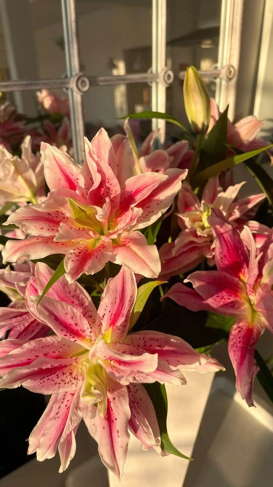
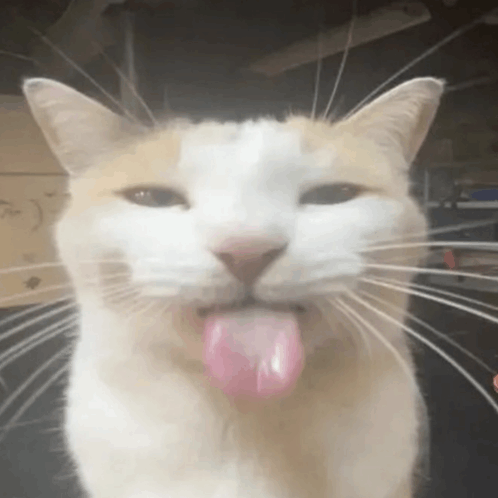

Tap mo ung mga belog


Tbh medj kinakabahan ako habang tinatype ko to kasi like hindi ko talaga alam kung paano sisimulan to haha cguro ill just be straight and honest with you. Ever since nung O-Week nung first time kitang nakita, may something na talaga akong nafeel sayo hindi ko maexplain kung ano exactly pero may something sayo na caught my attention and ayon I think nahalata mo naman na siguro nung una pa lang HASHAHAHAHA. Habang tumatagal prang Im admiring you more and more, hanggang sa naging someone ka na inaabangan kong makita or makausap. You have this way of making my day better without even trying and honestly, im thankful na nakilala kita. Thankful din ako na hindi ka naging awkward sakin and kinausap mo pa rin ako despite knowing na may crush ako sayo HUEHSHEUH kabado ako non na baka maging awkward between us or magiba yung way mo ng pakikitungo sakin, pero im glad na you still made things feel normal. I really appreciate every interactiont naten kahit simplest interactions we have like ung mga simpleng conversations lang they make me happy more than you probably realize.
Diko alam whatever you think about me or kung ano yung nafeel mo ever since pero want ko na talaga sabihin to instead of keeping it to myself. I like you, and crush kita ever since that first time I saw you nung O-Week...ung matangkad na naka Barcelona jersey. Maybe hindi na rin naman bago sayo to HHSAHDAHS, pero want ko na sabihin sayo deretsohan pra formal ganern. Nde nmn ak nag eexpect ng smth in return or what, and I dont want you to feel pressured by this confession. Kahit ano pa reply moo, I hope we can still talk and be ourselves around each other im just really glad na nakilala kita and I hope you know na someone appreciates you for who you are. Thankyou sa pag buo ng mga araw ko and gabi(nung naglalaro tayo HAHAH). diko man alam ano mangyayari after this pero at least na sabe ko na. Take care always and keep smiling
Bleh,
Kyla